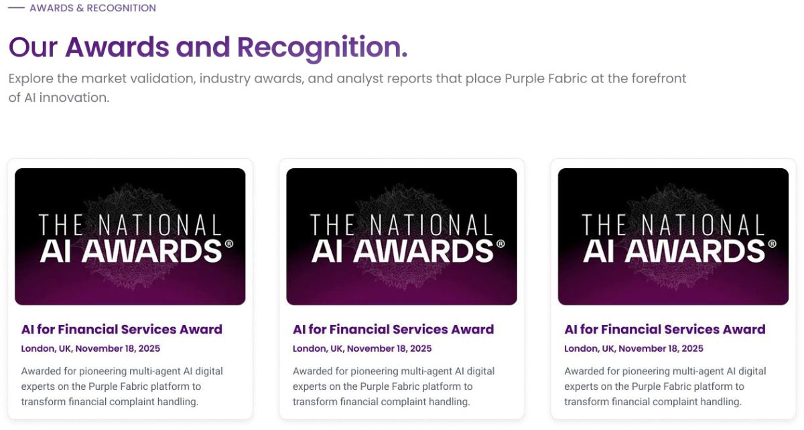
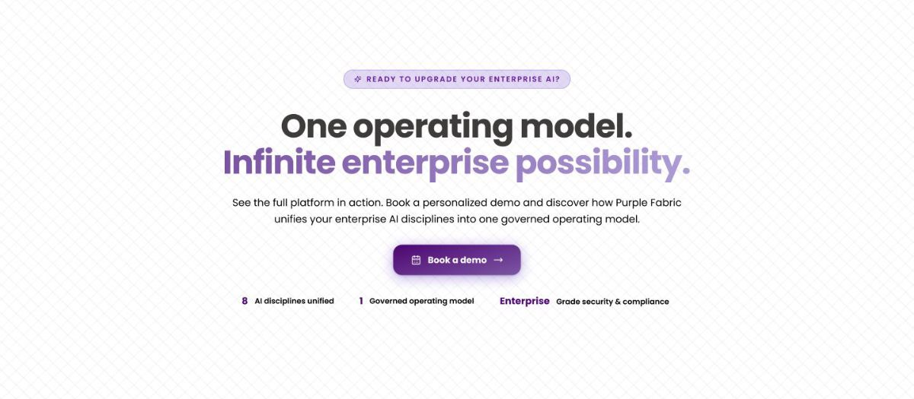
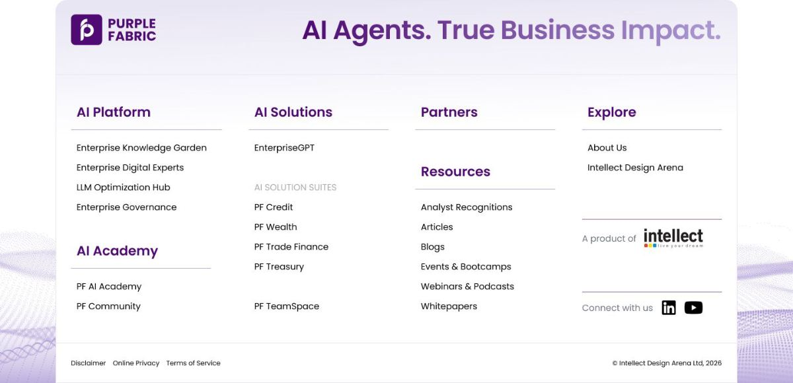
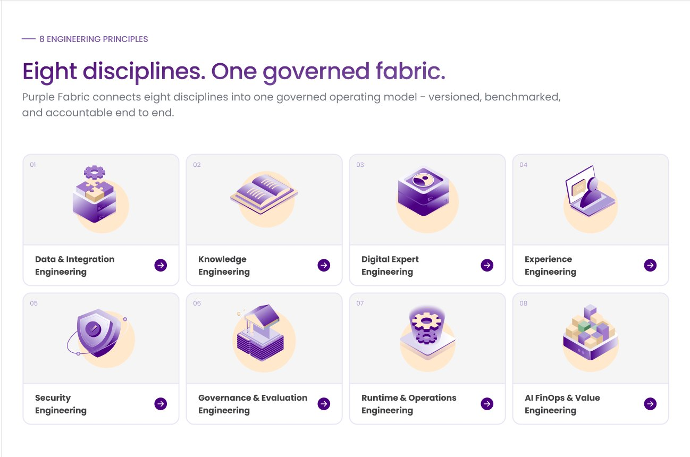

Purple Fabric
2026A homepage redesign for an enterprise AI platform sold to financial institutions.
Purple Fabric is Intellect Design Arena's enterprise AI platform. Its homepage led with internal vocabulary: Enterprise OS, Knowledge Garden, Digital Experts, Business Impact AI, so a first-time visitor had to learn the company's language before learning what the product does.
I came to the product as a newcomer. Even after a certification course, it only began making sense once I'd been walked through the concepts over several days.
A first-time visitor gets seconds, not days.
The page explained its own components before its value
Six proprietary terms, none of them defined above the fold.
{{ a.v }}
Every platform I benchmarked led with outcomes. Ours led with vocabulary.
What each homepage leads with, above the fold.
{{ f.t }}
The three findings that changed the design.
How do we make a first-time visitor understand what Purple Fabric does, who it's for, and why to trust it, without teaching them our vocabulary first?
Nothing was cut. Everything moved.
The same nine sections, resequenced so the page names its audience and states its function before it explains its architecture.
The architecture sections fall. Audience and impact rise. The navigation, separately, went from a deep custom structure to the five-item pattern all seven competitors use.
{{ p.t }}
{{ p.b }}
The homepage, rebuilt.

The headline names its audience in five words. Below it, the systems Purple Fabric connects to, then three outcome metrics and client logos: enterprise knowledge, grounded in trusted data.
One platform, eight disciplines
The single-platform argument the whole category makes, stated plainly, carried by one isometric visual instead of a paragraph. No fragmented AI stack.


The text-heavy tech stack section became eight cards that open on demand. A visitor sees the shape of the platform in one pass and reads only what's relevant: the depth is there without the wall of copy.
Governance shown, not claimed
Six lifecycle stages, an agent blueprint, and a checkpoint that makes compliance concrete: roles defined, failure modes documented, data boundaries approved. Built-in from day one.


An entry point by financial function, for visitors who arrive knowing their problem. Designed for financial institutions.

Third-party validation before the final ask, so the claim comes from outside the company.


One unmistakable ask instead of a lone button in the corner, and a footer that holds the depth a visitor might want next.
Opening a discipline, and the lifecycle and governance sections that follow it.
Five directions that failed for opposite reasons
The fabric metaphor pulled toward literal weave imagery: beautiful, and silent about what the platform does. A functional card grid pulled the other way: easy to scan, and anonymous.

What shipped keeps the weave in the language rather than the layout: a grid that scans in one pass, with the metaphor carried by illustration.
Being new to the product was the research.
My own confusion mapped almost exactly onto the first-time visitor's. Documenting it early, before I learned the internal vocabulary, was the most valuable input I had.
{{ r.t }}
{{ r.b }}
Next. Industry sub-pages for lending, payments, risk and insurance · an interactive platform walkthrough · customer stories with named outcomes · usability testing with banking teams.